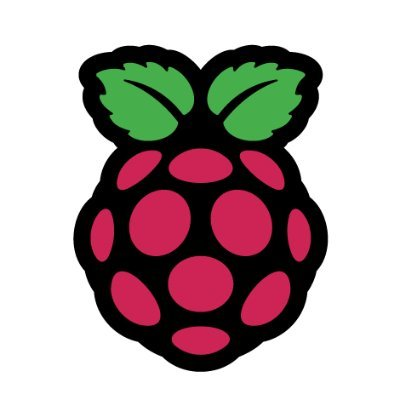

Abstract
In this resource, we will explore Minecraft Pi, an edition of Minecraft made for Raspberry Pi. We will learn how to control the player, manually build blocks and use the Python Interface to manipulate the world around us. Specifically, we will create a new world within Minecraft, use Python programming environment IDLE to connect to Minecraft Pi, use Minecraft Python API to post text to the chat window, find the player's coordinates, teleport and build structures, using variables to store IDs for different types of blocks given in the game, and focusing on their special attributes.Minecraft Pi can be useful or interesting to others because it is low costly. This is in regards to the low costly small-sized computer (raspberry pi) and it comes with Minecraft (with installation) for free. For individuals that would want to get in touch and try minecraft for free without having to spend loads of money on a computer, this is a favorable option.
